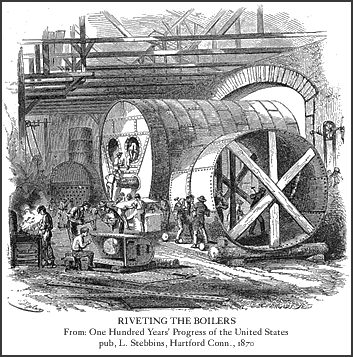
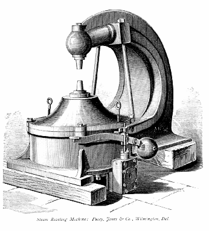
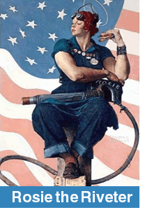

|

In the strictest sense, the riveter is not a blacksmith. The rivet
itself may have been hand forged by a blacksmith or power hammer forged by an industrial
blacksmith. Once made though, the rivet was used by the riveter to assemble the parts of
buildings, bridges, machinery, ships, &c.

In the manufacturing plants of America, power hammers were used to
rivet smaller assemblies and sub-assemblies together.
Our top image shows very large boilers being riveted by hand - notice
the men with sledge hammers - also notice a forge which was used to heat the rivets.
The image to the left shows a steam riveting machine which would be
used in a factory. There a pre-measured beam for a building or a bridge could have been made
with holes for rivets that would punched out and a then plate riveted to one end.
When the beam arrived on the
job site, the beam would be joined to another beam by being riveted, either by
sledge hammers (in the early days) or later by pneumatic riveting guns. The large
riveting machines were way too cumbersome to be portable.
Today, welding has take the place of many riveting jobs.
|
|
Rosie the Riveter

Perhaps the most famous riveter of all is Rosie. She was the product of artist
Norman Rockwell’s brush. She first appeared on the May 29, 1943 cover of The Saturday Evening Post.
Rosie the Riveter was also glorified by the song of the same name:
All day long whether rain or shine
She’s a part of the assembly line.
She’s making history, working for victory,
Rosie the Riveter.
With the advent of World War II, many men were needed
for military service - and there was a great NEW need for ships,
airplanes, armored vehicles, trucks, bombs, ammunitions,
and - well the list would be almost endless. The US
government put out a call for
women war workers in magazines like Ladies’ Home
Journal. The flower of America’s womanhood -
wives, mothers, and sweethearts - all answered the call.
Rosie became the symbol of women war workers. Rosie is also a symbol of the ability of
women to get the job done.
As Rosie takes her lunch break, she sits with her
pneumatic riveting gun, ready to go back to work. Under
her feet is a copy of Mein Kampf.
|

| |
|